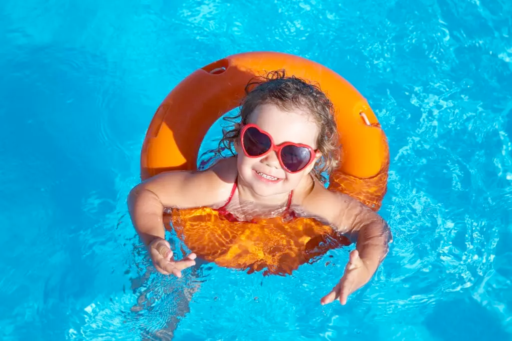

Learn more about swimming!
Swimming is a full-body workout that improves cardiovascular health, strengthens muscles, and enhances flexibility. It’s low-impact, making it ideal for joint health and injury recovery. Swimming also reduces stress, boosts mental well-being and promotes overall fitness.
The Ripple Effect: Key Health Benefits
1
Enhances heart and lung health, boosting cardiovascular endurance with each stroke.
2
Full-body toning that works muscles you didn't even know you had—legs, arms, core, and back are all engaged.
3
Increases flexibility and balance, promoting smooth, controlled movements in and out of the water.
4
Relieves stress and calms the mind, offering a form of 'active meditation' as you glide through water.
5
Gentle on the joints, making it an excellent choice for those with arthritis or recovering from injuries.
6
Burns calories efficiently—perfect for weight management while enjoying a refreshing dip.
Different Types of Swimming Strokes
Why Swimming Stands Out
Unlike other forms of exercise, swimming uses water's resistance to tone your muscles while protecting your body from high-impact stress. It's a blend of fun and fitness, making every swim session feel like an escape from the ordinary.
Whether you're exploring the ocean’s depths, relaxing in a lake, or training in a pool, swimming opens up a world of adventure. It’s also one of the most accessible forms of exercise — you can do it nearly anywhere, regardless of your skill level.
How to Get Started: Take the Plunge!
If you're new to swimming, start with these easy steps:
1
Start with floating: Build comfort in the water by learning to float on your back and control your breathing. This foundational skill leads to smoother swimming.
2
Master basic strokes: Learn the fundamental strokes — freestyle, backstroke, breaststroke, and butterfly. Each stroke targets different muscles and offers varying intensity levels.
3
Stay safe: Always swim in designated areas with lifeguards present. Know your limits and never swim alone in open waters.
Taking It to the Next Level: Explore New Horizons
Ready to up your game? Consider these ways to challenge yourself:
1
Open Water Swimming: Experience the thrill of swimming in natural bodies of water, such as oceans, lakes, or rivers. It offers a completely different experience compared to pool swimming and brings you closer to nature.
2
Competitive Swimming: Join a local swim team or participate in races to push your limits. Competing adds focus to your training and keeps you motivated.
3
Aquatic Therapy: Use the therapeutic properties of water to recover from injury, manage chronic pain, or simply relax tired muscles.